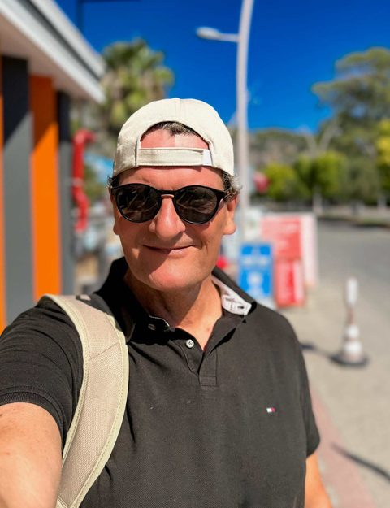
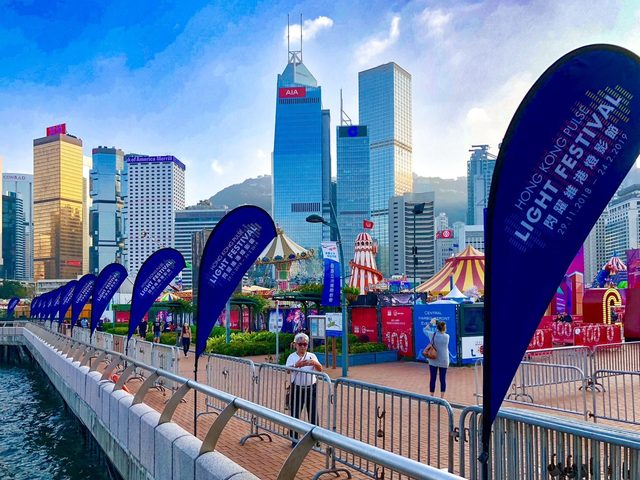
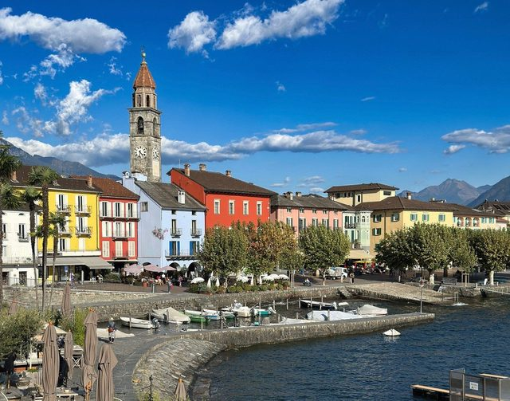
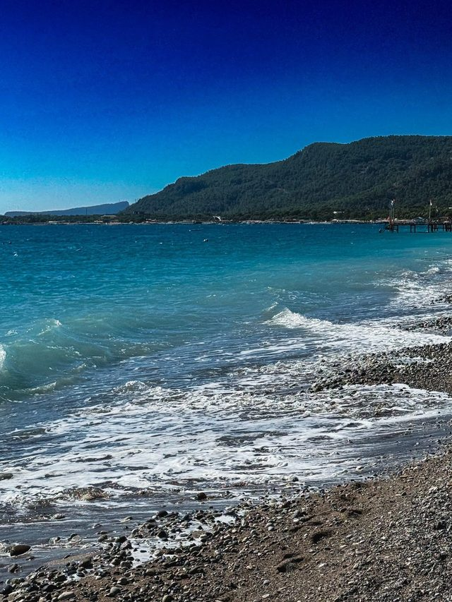

Passau: Am Dreiflüsseeck, wo Inn und Ilz in die Donau fließen
Passau liegt an der Donau, am Dreiflüsseeck münden Inn und Ilz. Dazu die Domorgel im Dom St. Stephan, die Veste Oberhaus, Hochwassermarken von 1845 bis 2013.
Ich bin Torsten. Geschichtenerzähler mit Kamera aus Fürth. Ich reise, seit ich sechs bin, und genauso lange fotografiere ich. Am Anfang waren meine Aufnahmen nur in Schwarz-Weiß. Die Filme und Bilder habe ich dann selbst entwickelt. Beigebracht hat es mir mein Vater. Hinter der Kamera bin ich ganz gut aufgehoben. Davor eher so mittel.
Fotos, Notizen, halbe Sätze auf Bordkarten. Auf torsten-fink.de kommt das Beste davon hin, mit belastbaren Quellen am Ende jeder Geschichte. Daneben ein paar Rechner fürs Golfen und fürs Reisen. Beruflich im Qualitätsmanagement und in der Informationssicherheit unterwegs. Tagsüber ISO 27001, abends ISO 100.

Die Reihenfolge folgt dem Pager der Website. Geografisch ergibt sie keinen Sinn. Geschichten aus 2026 sind hervorgehoben.
Passau: Am Dreiflüsseeck, wo Inn und Ilz in die Donau fließen
Passau liegt an der Donau, am Dreiflüsseeck münden Inn und Ilz. Dazu die Domorgel im Dom St. Stephan, die Veste Oberhaus, Hochwassermarken von 1845 bis 2013.
Singapur: Einmal hoch und runter im SG50-Jahr
Einmal hoch und runter. Marina Bay, Gardens by the Bay, Chinatown, Little India, Night Safari. Singapur 2015, SG50.
Tokio: Alle kannten die Schritte, nur ich nicht
Tokio im März 2017: Shinjuku, Akihabara, Meiji-jingū, Sensō-ji, Kaiserpalast, Tokyo Tower und Skytree. Eigene Fotos, Fakten mit Quellen.
Kamakura: Wo die Shogun surften?
Kamakura, eine Stunde von Tokio: Hauptstadt des ersten Shogunats, der Große Buddha von Kōtoku-in, Enoshima und Surfen, wo Japans Surfkultur begann.

Hongkong: Meinen Platz am Rand gebe ich nicht mehr her
Hongkong zum Chinesischen Neujahr: Parade vor den Chungking Mansions, gebogene Eckhäuser, 431 Stufen zu den Zehntausend Buddhas und Baden in Stanley.
Istanbul: Andere Städte haben Stadtteile, Istanbul hat Erdteile
Istanbul nach 33 Jahren: Blaue Moschee, Levent, elf Metrolinien, Street Art in Beyoğlu und Sonnenuntergang an der Haliç-Metrobrücke über dem Goldenen Horn.

Locarno & Ascona: Das Tessin im Entschleunigungsmodus
Locarno und Ascona am Lago Maggiore: Piazza Grande, Aussteigerberg Monte Verità, Ponte dei Salti im Verzascatal und Golf mit Bergblick.

Beldibi: Türkisfarbenes Wasser & Russische Geschichten
Beldibi an der Türkischen Riviera bei Kemer: kleines Hotel, Kieselstrand, türkisfarbenes Wasser, Wandern im Taurus, Russen und Ukrainer am selben Strand.
Bad Heilbrunn: Ein Kompass, der immer auf Wasser zeigt
Zehn Tage Bad Heilbrunn in Oberbayern: Wandern, genießen, kurieren, mit Tegernsee, Starnberger See, Walchensee und König Ludwig II. vor der Haustür.
Golfplatz Herzogenaurach: zwischen drei Streifen und einer Raubkatze
Mein Heimatclub in Herzogenaurach: wo ich mit Pro Stewart das Golfen lernte, die Craig Miller Golfschule und die jahrzehntelange Fehde zwischen Adidas und Puma.
Tokio zu Fuß: 8 Bahnhöfe, an denen Sightseeing direkt beginnt
Acht Bahnhöfe in Tokio, an denen die Sehenswürdigkeiten zu Fuß warten: Gehzeiten aus offiziellen Quellen, Karte und eigene Fotos von Shibuya bis Asakusa.
Verbeugen in Japan: Eshaku, Keirei, Saikeirei und Dogeza
Wie tief verbeugt man sich in Japan? Die vier Formen Eshaku, Keirei, Saikeirei und Dogeza mit Winkeln, Anlässen und passenden Sätzen, belegt und bebildert.
Tai Chi in Hongkong: Zeitlupe zwischen Hochhäusern
Tai Chi in Hongkongs Parks: was es ist, wie alt es wirklich ist, was Studien sagen. Eine Übung direkt aus Hongkong, drei weitere optional.
Handicap-Rechner Golf: Handicap berechnen (WHS, DGV, 9 Loch)
Golf-Handicap kostenlos online berechnen: Handicap-Index und Course Handicap nach WHS und DGV-Regeln, 9-Loch-Runden inklusive. Ohne Anmeldung.
Stableford-Rechner: Punkte pro Loch mit Vorgabe berechnen
Stableford-Punkte berechnen: Playing Handicap nach WHS, Vorgabeschläge pro Loch nach Stroke Index, Netto- und Bruttopunkte. Jeder Schritt sichtbar.
Jetlag-Rechner: Zeitverschiebung und Anpassungsplan für Fernreisen
Kostenloser Jetlag-Rechner: Zeitzonen-Unterschied berechnen und einen Tag-für-Tag-Anpassungsplan für die Reise nach Tokio, Hongkong, Singapur und mehr erhalten.